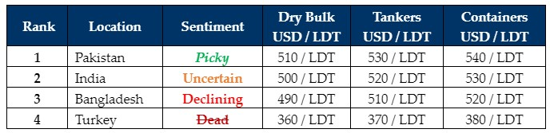

inWeekly Demolition Reports05/08/2024

Zooming out of the ship recycling markets, we see geopolitical events take centerstage across all shipping sectors (trading and recycling) for yet anotherweek and can easily be forecasted to do so into the foreseeable future i.e. through Q3 and likely well into Q4 as the mysterious bombing assassination of one of the founding members of Hezbollah in the heart of the Iranian capital city of Tehran early in the week sent shockwaves across the Arab world, followed by Iranian leaders vowing to avenge his death with a purported “new phase of war” in an already TNT loaded situation. Thereafter, news of Hezbollah firing a bevy of rockets into Northern Israel surfaced late in the week, none of which have resulted in casualties so far. As the Houthis in the South also plan out their next scope of attacks on passing commercial vessels in the Red Sea, overall tensions in the Middle East are destined to keep freight rates artificially elevated for the next 2 – 3 months, and in so depriving global recycling destinations of meaningful tonnage.
Zooming into the individual markets, we see national unrest in Bangladesh displaying no signs of calming any time soon as student body protests continue to take to the streets in ever worrying numbers and despite increasing communications blackouts, curfews, and a growing army presence on city streets – student deaths are reportedly still on the rise, in what is being alleged as ‘intentional’ by the ruling party. With several hundreds of deaths now reported, there is growing speculation that we may see the overthrow of the ostensibly unpopular PM Sheikh Hasina & her regime that could propel the nation deeper into a political & economic crisis. On the other side, India’s ongoing fallout from its General Elections and its recent Budget announcement has left Alang Recyclers increasingly on edge about the immediate economic future of their country, especially as Indian fundamentals continue to suffer for weeks on end. Even Pakistani Buyers, despite being atop the market rankings, seem to have nothing to show for it as for nearly 4 weeks now, there have been no fresh arrivals at Gadani’s waterfront, likely marking a first week in the series of many empty port reports. Finally, amidst an utter lack of recycling news emanating from the shores of Aliaga for well over a year now, Turkey remains dead silent and practically out.
On the various domestic fundamentals’ fronts, not only have local steel plate prices remained volatile / dead overall, but ship recycling nations currencies also registered declines against the U.S. Dollar this week, driving ship recycling sentiments further into the abyss of uncertainty. As such, the slowdown in tonnage driven by developments in the Middle East, coupled with the onset of summer holidays in the shipping fraternity means increasingly little focus will be diverted to ship recycling efforts this month, especially as vessel prices & demand remain stunted.
For week 31 of 2024, GMS demo rankings / pricing for the week are as below.

📄 Download PDF: Ship-recycling-market-insight-Week-31-7-26-2024-Focus_Shifts.pdfSource: GMS,Inc.https://www.gmsinc.net/gms_new/index.php/web